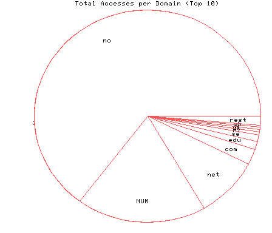
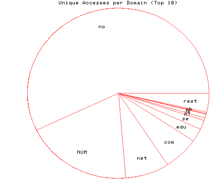

HTTP Server Domain Statistics
Covers: 10/23/95 to 10/29/95 (7 days).
All dates are in local time.
1 level, sorted by number of requests, 24 unique domains.
6459 : 429 : 10/29/95 : Norway (.no) 1852 : 144 : 10/29/95 : (numerical domains) 916 : 59 : 10/29/95 : Network (.net) 242 : 48 : 10/29/95 : US Commercial (.com) 118 : 19 : 10/29/95 : US Educational (.edu) 107 : 13 : 10/28/95 : Sweden (.se) 45 : 4 : 10/28/95 : Netherlands (.nl) 36 : 5 : 10/27/95 : United Kingdom (.uk) 34 : 1 : 10/25/95 : France (.fr) 31 : 2 : 10/28/95 : Switzerland (.ch) 28 : 3 : 10/28/95 : Denmark (.dk) 28 : 1 : 10/27/95 : US Military (.mil) 7 : 3 : 10/29/95 : Canada (.ca) 7 : 3 : 10/28/95 : Non-Profit (.org) 6 : 2 : 10/28/95 : Germany (.de) 6 : 2 : 10/28/95 : Iceland (.is) 6 : 2 : 10/26/95 : US Government (.gov) 4 : 2 : 10/27/95 : Malaysia (.my) 3 : 1 : 10/27/95 : Finland (.fi) 3 : 1 : 10/27/95 : Ireland (.ie) 3 : 1 : 10/26/95 : Japan (.jp) 2 : 1 : 10/27/95 : Greenland (.gl) 1 : 1 : 10/25/95 : Saudi Arabia (.sa) 1 : 1 : 10/23/95 : Poland (.pl)

Statistics generated at Sun Oct 29 08:32:26 MET 1995, (C) Oslonett AS, 1995.